1.
Background
Founded in 1973, Second Stage is Wesleyan's predominant and the nation's second-oldest student-run theater company. The organization is the primary caretaker for the Patricelli '92 Theater, a dynamic space that can hold over 120 audience members in a variety of traditional and immersive configurations. Second Stage produces up to twelve productions per semester in the '92 Theater and other various campus spaces, and each production has the opportunity to make use of an extensive inventory of including lighting and sound equipment, costumes, props, and scenic elements (as well as a professional scene shop).
During my time on Second Stage, I produced 50 student productions, coordinated ticketing for over 120 performances attracting over 5000 attendees, supervised the use of over $20,000 of sound equipment, and spearheaded a visual rebranding including a website redesign. In addition to my administrative and technical work, I sound designed and made posters for numerous productions.
The biggest challenge my peers and I faced on Second Stage was finding ways to create a more inclusive space to promote diversity in Wesleyan's theater community, while assuring the safe use of our technical equipment. This was and is an ongoing effort—during my time at Second Stage, I developed systems and procedures aimed to help the organization increase transparency and efficiency after my departure.
2.
Assessment
My work on Second Stage was multi-faceted, but all of my efforts began by evaluating the organization's historical and current status within Wesleyan's theater community. Prior to my joining the organization, another student theater organization, Second Shades, emerged in response to Second Stage's inability to accommodate students of color. Furthermore, the general external opinion was that Second Stage, while prolific, generated an intimidating, elitist atmosphere and did little to educate students about technical aspects of theater design and production. The organization was failing to meet its mission of creating a safe space for students to learn by creating theater.
During my time on staff, we made strides to create a friendlier, more accessible environment and worked with Shades to offer support and resources that would otherwise be completely inaccessible. This process involved completely rethinking our show and staff selection process, as well as how we handled individual productions. I operated our sound equipment, ticketing, and website and rethought how we use each system to carry out our mission.
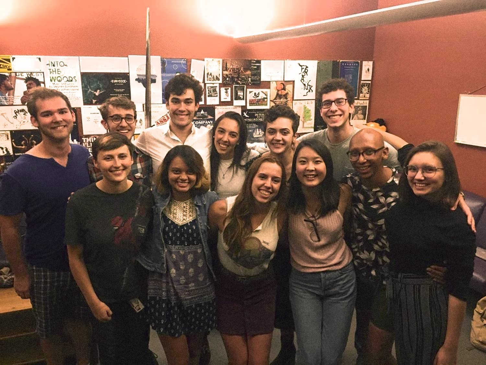
Fig. 1. Staff photo from the Fall 2017 semester.
3.
Building an Umbrella
My first initiative was to rebrand our organization to make it a vessel for the works we produced. I worked to find ways to promote our works such that students could recognize our organization's values across multiple productions. I created an identity system that highlights individual productions under an overarching aesthetic, creating a cohesive image of student theater at Wesleyan.
Even so, I wanted to avoid taking credit for the accomplishments of students since staffers serve an administrative and technical role, not a creative one. I enacted poster guidelines for productions that did not enforce this identity system and instead encouraged each production to look and feel unique. The pressure therefore was on Second Stage to follow through with its mission, while students could prioritize their creative processes.
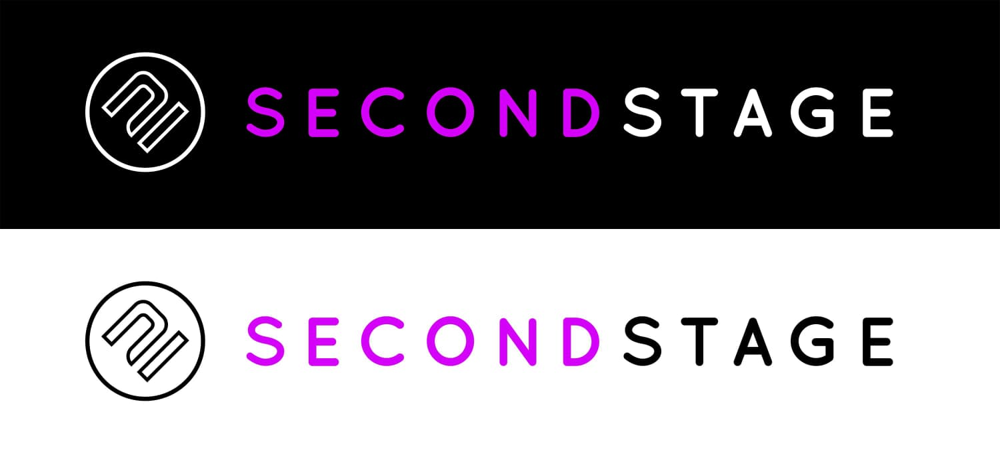
Fig. 2. Logo redesign employing new typeface and color scheme with refined logomark.
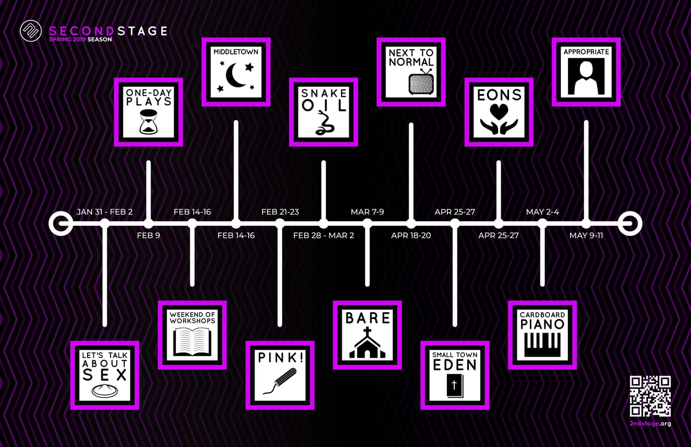
Fig. 3. Spring 2019 season poster.
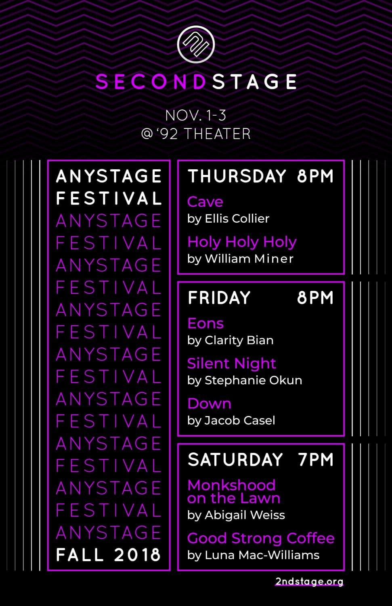
Fig. 4. Promotional poster for annual festival of new student-written work.
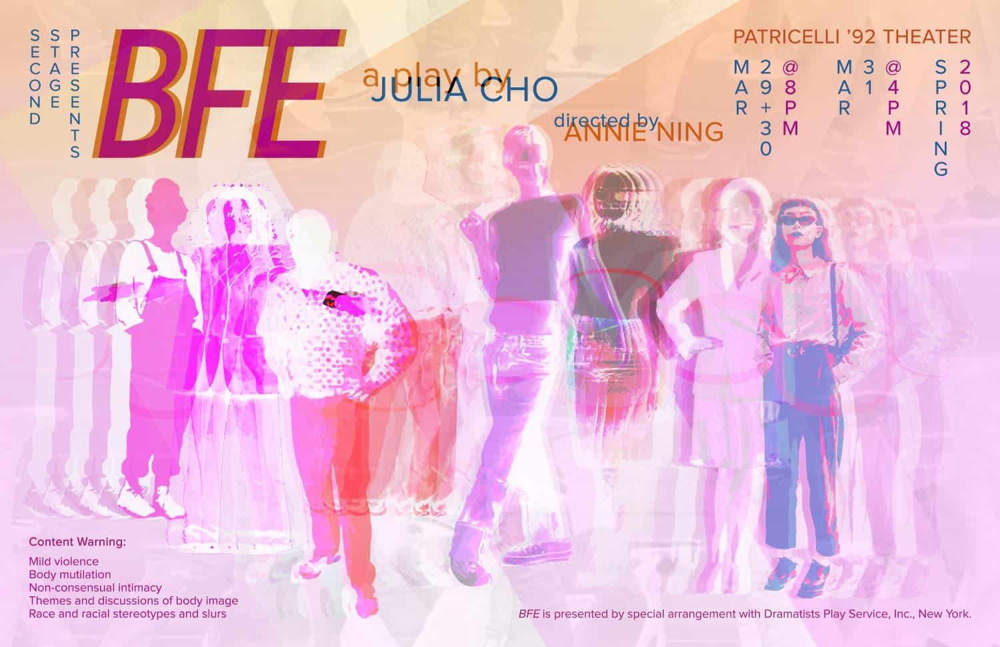
Fig. 5. Promotional poster example (that I designed!) for a production.
4.
Maintaining & Improving
Within staff, the most contentious discussions involved how to maintain high levels of safety and technical competency while simultaneously allowing more inexperienced people to work on our staff and productions. The danger of favoring people with technical experience is that those individuals are usually the most privileged before college and often inadvertently condescend and discourage new students from working in theater. We would not discourage these technical students from applying, but instead instated stricter requirements for applicants to be aware of their backgrounds and show enthusiasm for sharing their knowledge with others.
As we became more selective in our staff selection and show curation, I attempted to offload some of our labor by making technical and administrative information more accessible. Internally, I reorganized our documents in a shared cloud drive for easy reference and upkeep. Externally (also for the benefit of staff), I created a series of infographics on organizational policies and authored extensive documentation to put on our website. These efforts increased our transparency to students and made theater more accessible through Second Stage specifically, as well as kept our organization more organized thus resulting in more effective leadership.
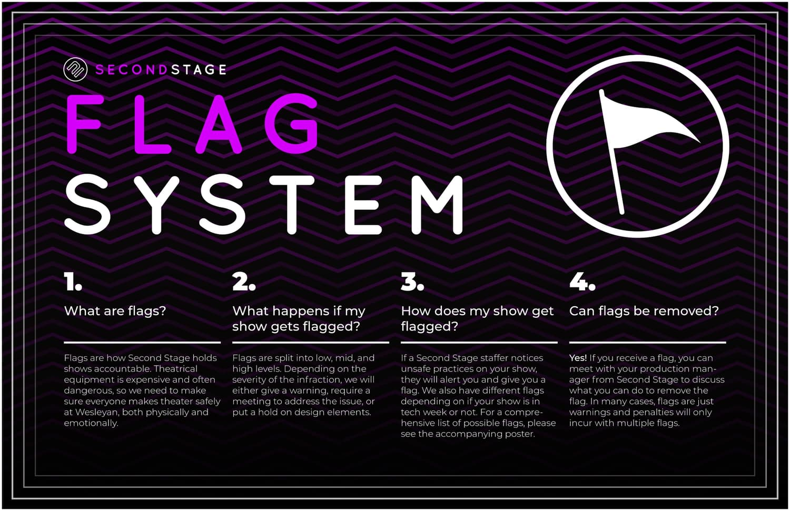
Fig. 6. "Flag System" infographic detailing the rules by which shows are held accountable.
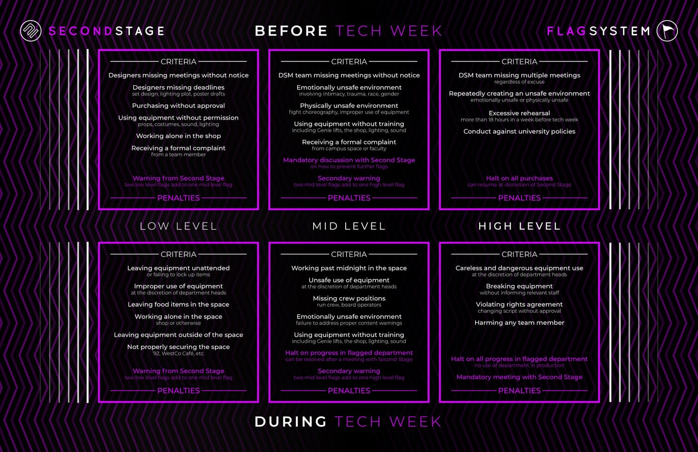
Fig. 7. Specifics of the aforementioned Flag System.
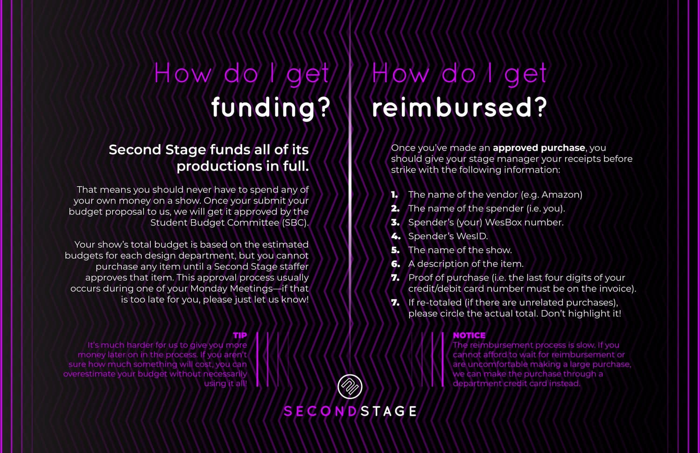
Fig. 8. All information regarding reimbursement by the school.
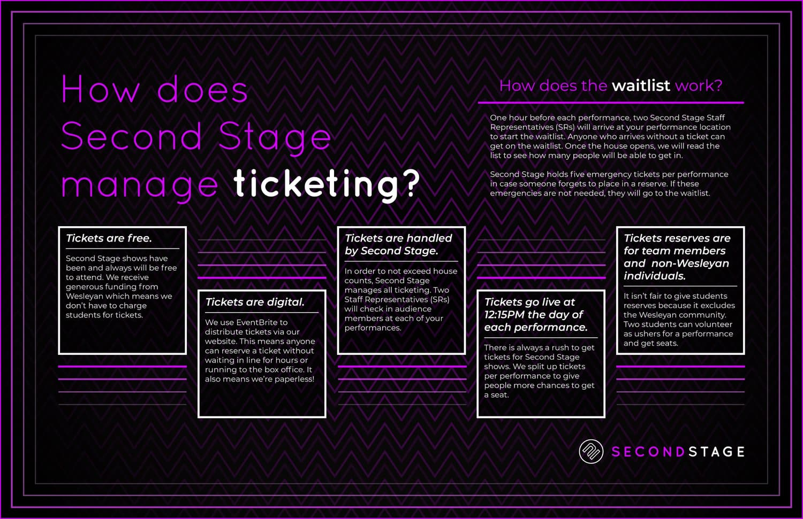
Fig. 9. Overview of the ticketing process.
5.
Digital Presence
I revised the entire site's aesthetic and structure to employ our identity system and visually promote our mission statement. As Second Stage is a student-run organization, I also prioritized building on a framework that future staffers could easily use. I worked within the confines of Squarespace and developed over 50 pages as permanent homes for our policies, while minimizing which pages would require regular updates. At the same time, I built a public archive of over 150 past productions that I continuously updated with each subsequent production.
For ticketing, we moved from a physical to digital ticketing system to prevent enormous lines causing shows to sell out before they even went on sale. Furthermore, digital ticketing made the system more accessible to show teams as they could easily update reserves and house counts. Finally, digital ticketing allowed us to promote shows directly on our website as we had complete control over distribution.

Fig. 10. Website homepage with instructions on how to get involved in student theater.
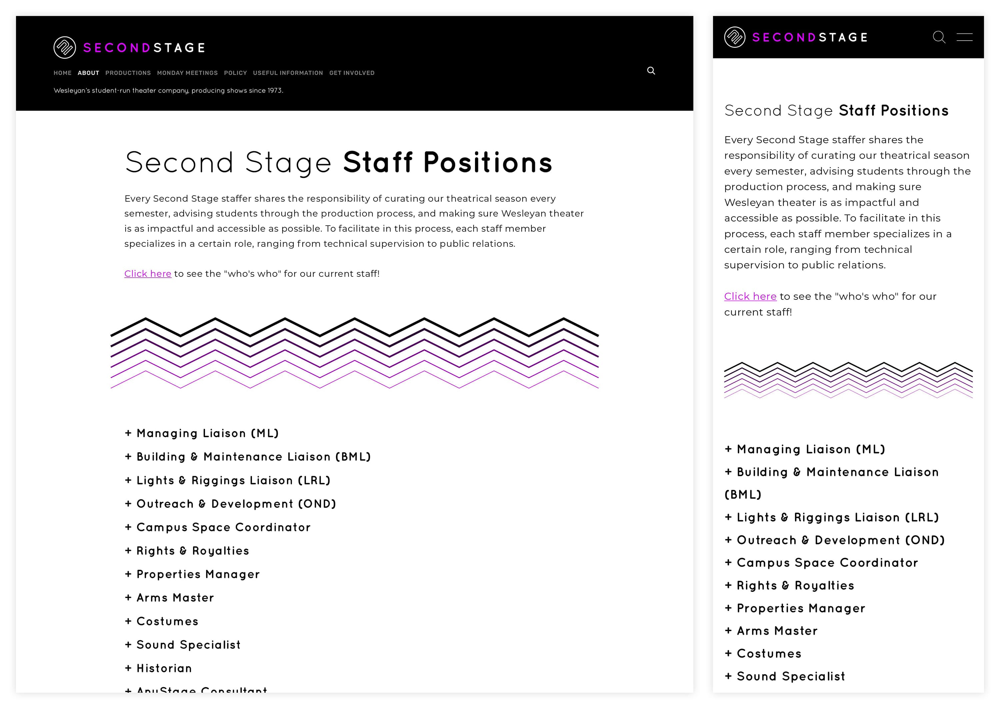
Fig. 11. Informational page on the structure of Second Stage staff.
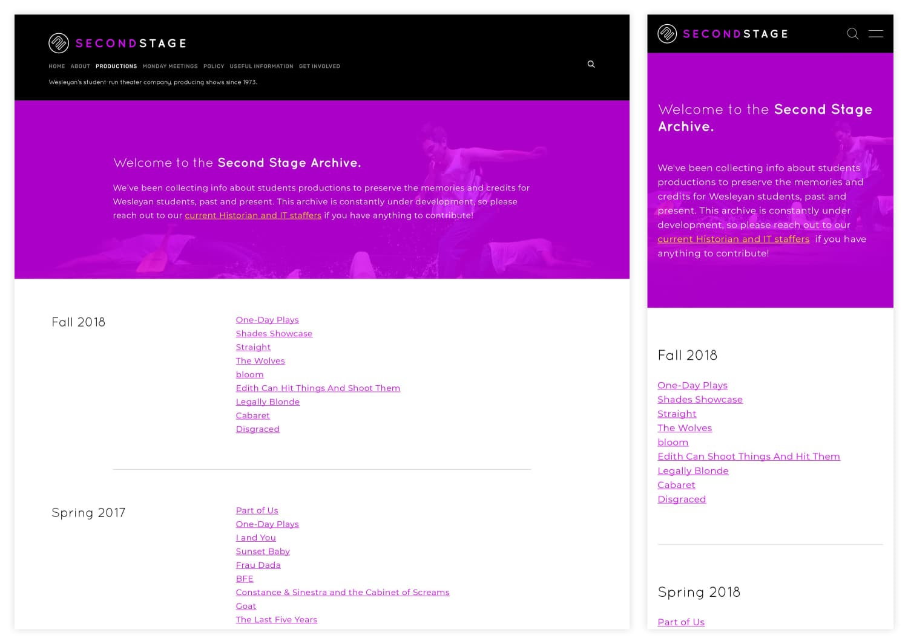
Fig. 12. Digital archive of past productions featuring credits and photos.
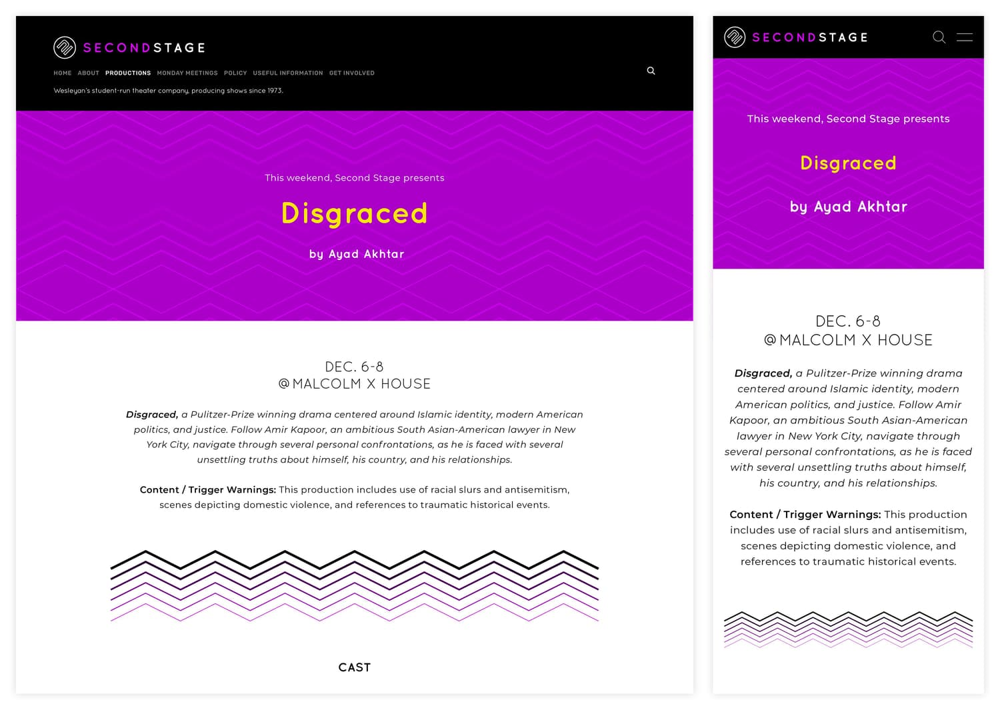
Fig. 13. Homepage for specific production (ticketing links removed).
7.
Reflection
Second Stage taught me how much effort is required to improve on a system when that system is strenuous to just maintain. As an organization built from volunteers, I dedicated as much time as possible understanding that any efforts I made beyond my core responsibilities would not be reciprocated in anything other than good will. I understood that the amount of work needed for most undertakings meant that a modest amount of effort would usually still result in nothing tangible external to the organization.
Even if I could not achieve the degree of comprehensive work that I aimed for, my time at Second Stage allowed me to see what work would be neccessary in a professional setting. Because of this experience, theater and arts administration has become one of my paramount passions and I aim to continue this work beyond Wesleyan. ◼


{kind=link}
{kind=link}
{kind=link}
{kind=link}
{kind=link}
{kind=link}
{kind=link}
{kind=link}
{kind=link}
{kind=link}
{kind=link}
{kind=link}